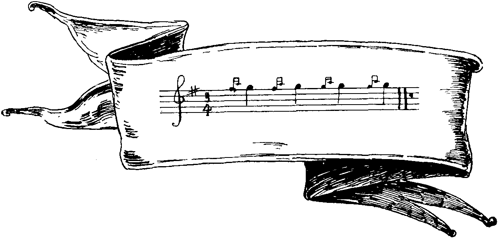
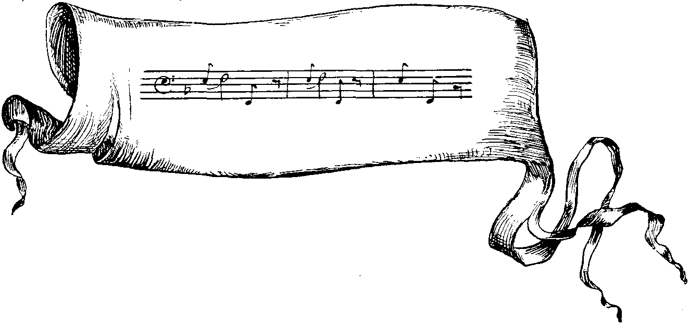
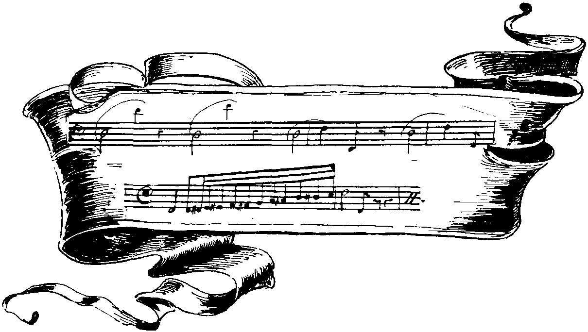
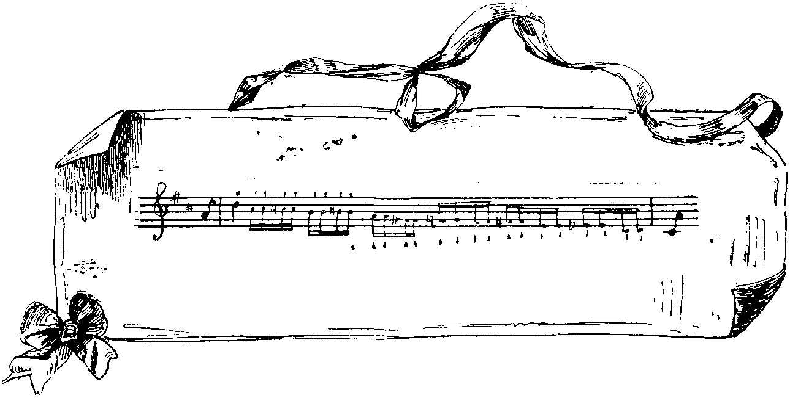
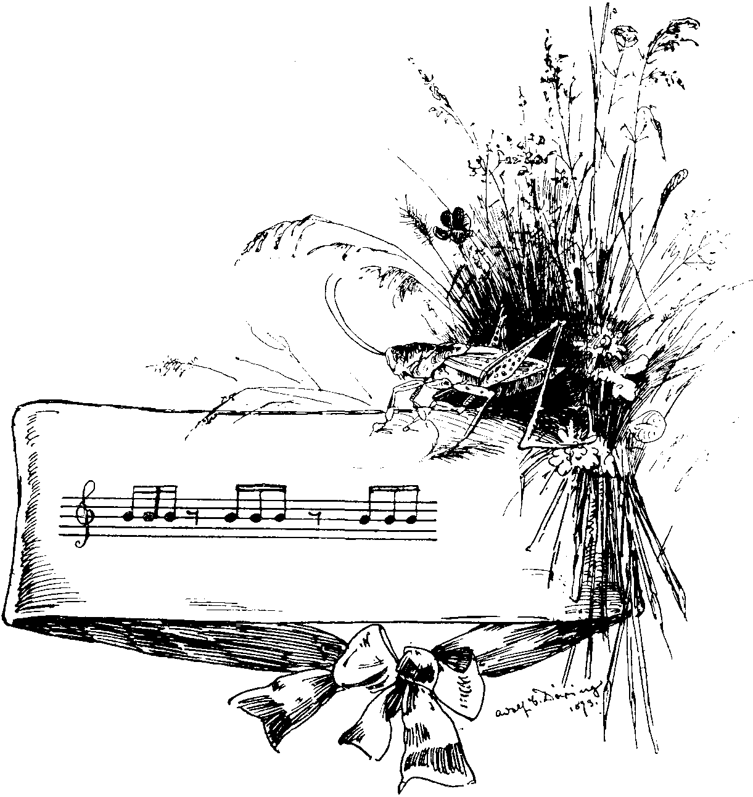
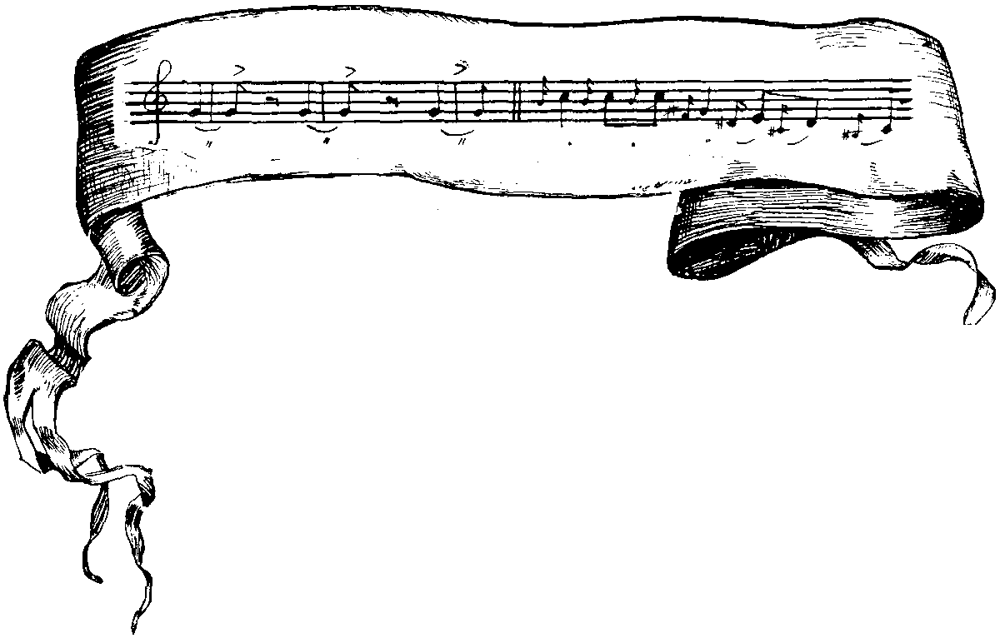
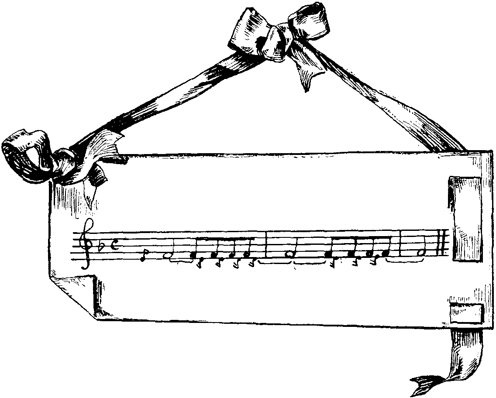

The Music of Nature.
BY A. T. CAMDEN PRATT.
II.
{kind=link}
Reference was made at the close of the last article to the voice of the dog, and his method of making his feelings and desires understood. It is, of course, well known that this is an acquired habit, or accomplishment. In a state of Nature the dog does not even bark; he has acquired the art or knowledge from his companionship with man. Isaiah compares the blind watchman of Israel to dogs, saying, "They are dumb; they cannot bark." Again, to quote the argument of Dr. Gardiner: "The dog indicates his different feelings by different tones." The following is his yelp when his foot is trod upon.

DOG YELPING.
{kind=link}
Haydn introduces the bark of a dog into the scherzo in his 38th quartette. Indeed, the tones of the "voice" of the dog are so marked, that more than any other of the voices of Nature they have been utilized in music. The merest tyro in the study of dog language can readily distinguish between the bark of joy—the "deep-mouthed welcome as we draw near home," as Byron put it—and the angry snarl, the yelp of pain, or the accents of fear. Indeed, according to an assertion in the "Library of Entertaining Knowledge," the horse knows from the bark of a dog when he may expect an attack on his heels. Gardiner suggests that it would be worth while to study the language of the dog. Perhaps Professor Garnier, when he has reduced the language of the monkey to "A, B, C," might feel inclined to take up the matter.
{kind=link}
Next to the dog there is no animal in which there is more variation of sound than in oxen: "Their lowing, though rough and rude, is music to the farmer's ear save one who moans the loss of her sportive young; with wandering eye and anxious look she grieves the livelong day." It is specially difficult in the case of oxen to suppose that they have a language; but it is impossible to doubt that the variations of their lowing are understood of one another, and serve to express their feelings if not their thoughts.

THE OX.
{kind=link}
{kind=link}
In the matter of exclamations, one knows how readily these may be imitated upon the violin, or in the case of the deeper or more guttural sounds, on the violoncello. The natural effect is greatly aided by the sliding of the finger along the note, especially in the case of the lowing of cattle; but there are other exclamations that are readily reduced to music. Gardiner gives one or two interesting cases, and the common salutation, "How d'ye do?" may be instanced. It usually starts on B natural, and the voice rising to D ends on C; whereas, the reply, "Pretty well, thank you," begins on D, and falling to A, ends again on D. After a few attempts on the piano, the reader will be able readily to form these notes for himself.

COW LOWING.
{kind=link}
{kind=link}
The horse, on the other hand, is rarely heard, and, though having a piercing whinny which passes through every semitone of the scale, it is scarcely ever varied.

HORSE NEIGHING.
{kind=link}

THE CHIRP OF THE GRASSHOPPER.
{kind=link}
{kind=link}
The music of the insects has already been alluded to, and everyone will agree with Gilbert White that "not undelightful is the ceaseless hum, to him who musing walks at noon." The entomologist has laboured hard to show us that the insect has no voice, and that the "drowsy hum" is made by the wings; a fact which, being beyond all cavil, puts to the blush the old-world story of Plutarch, who tells us that when Terpander was playing upon the lyre, at the Olympic games, and had enraptured his audience to the highest pitch of enthusiasm a string of his instrument broke, and a cicada or grasshopper perched on the bridge supplied by its voice the loss of the string and saved the fame of the musician. To this day in Surinam the Dutch call them lyre-players. If there is any truth in the story, the grasshopper then had powers far in advance of his degenerated descendants; for now the grasshopper—like the cricket—has a chirp consisting of three notes in rhythm, always forming a triplet in the key of B.

FLY BUZZING.
{kind=link}
{kind=link}
Gardiner, on the authority of Dr. Primatt, states that, to produce the sound it makes, the house-fly must make 320 vibrations of its wings in a second; or nearly 20,000 if it continues on the wing a minute. The sound is invariably on the note F in the first space. The music of a duck's note is given in the annexed score.
In conclusion, an article on the music of Nature would not be complete without an allusion to the music of the winds and the storm. Admirers of Beethoven will recall numerous passages that would serve as illustrations. One particularly might be mentioned—the chorus in "Judah" (Haydn), "The Lord devoureth them all," which is admirably imitative of the reverberations of the cataract and the thundering of mighty waters. The sounds at sea, ominous of shipwreck, will also occur to the minds of some. At Land's End it is not uncommon for storms to be heralded by weird sounds; and in the northern seas sailors, always a superstitious race of people, used to be much alarmed by a singular musical effect, which is now well known to be caused by nothing more fearsome than a whale breathing.

DUCK.
{kind=link}
These instances might be still further multiplied, but enough have, perhaps, been given to excite some general interest in "the Music of Nature."